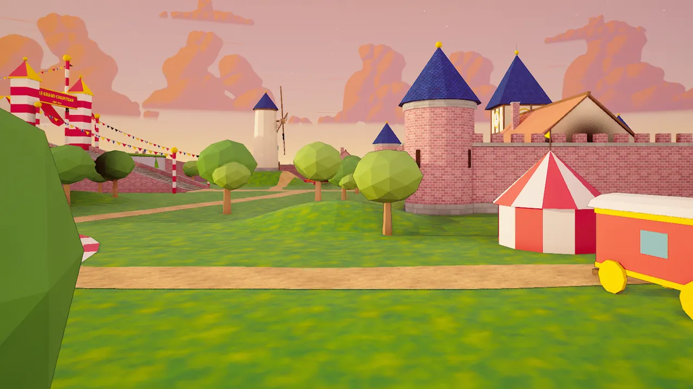
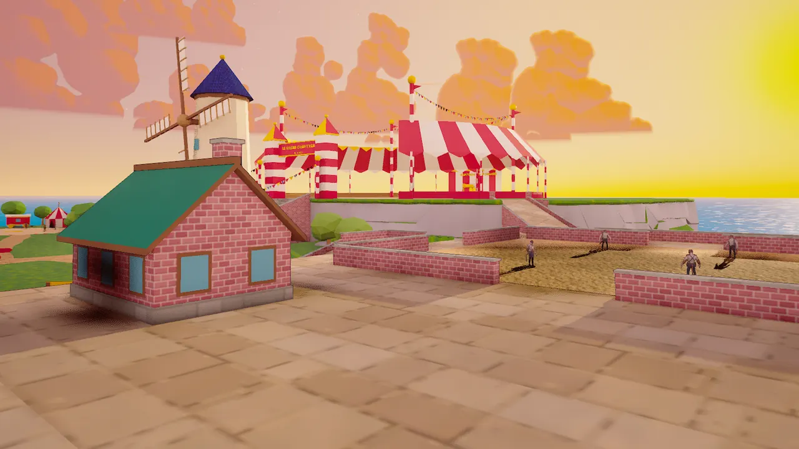

Squallport
A walled harbour town with orange roofs, a lighthouse, a windmill and a circus troupe that took over the place. Captain Tintamarre performs under the Big Top.
Overview
Squallport is for players from level 125 to level 180. You fight Surf Jugglers and Fairground Strongmen there. Its boss: Captain Tintamarre.
Missions
| Enemy | Level | HP | Damage | Defeats needed | Renown per defeat | Gold per defeat | Renown (mission) | Gold (mission) |
|---|---|---|---|---|---|---|---|---|
| Surf Jugglers Madam Grelotte | 125 | 4,300 | 88 | 5 | 430 | 115 | 10,650 | 11,500 |
| Fairground Strongmen Madam Grelotte | 150 | 5,100 | 94 | 5 | 525 | 130 | 13,100 | 12,800 |
- Madam Grelotte: On the town square of Squallport.
Each mission asks for this many defeats and restarts on its own once done. Per-defeat rewards are reduced if you are below the enemy's level.
HP and damage as set on the game's devices. Enemies strike in combos: each hit of a combo deals a share of this value (60%).
Boss
| Boss | Quest opens at level | HP | Renown | Gold |
|---|---|---|---|---|
| Captain Tintamarre | 180 | 28,500 | 27,000 | 13,000 |
How to get there
By boat: get one at the shipyard on Trade Winds Island, then follow the mission arrow. On each island, the Harbor Master can make their dock your respawn point.
Gallery

